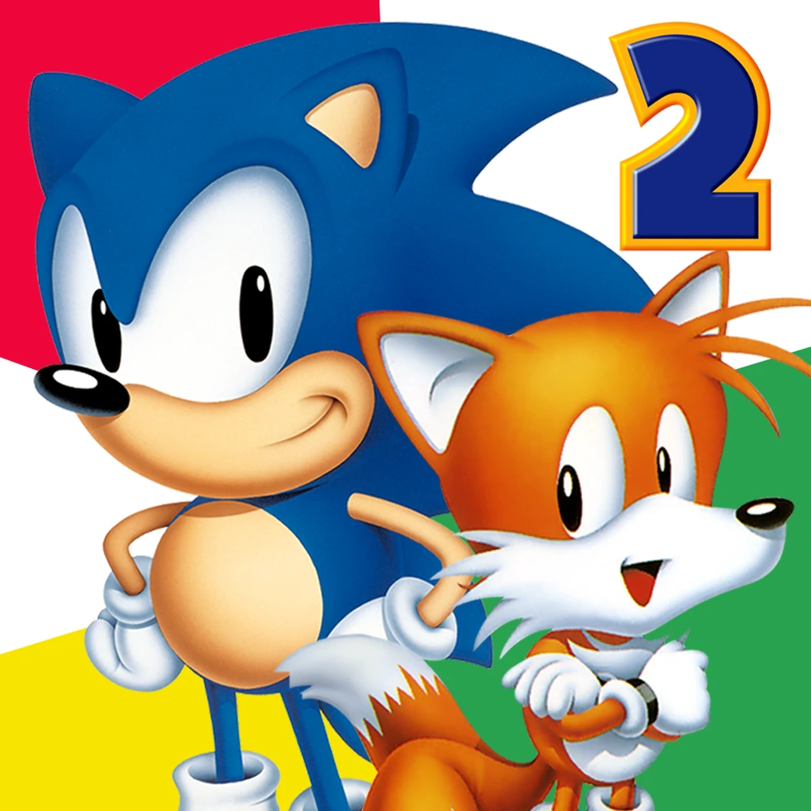
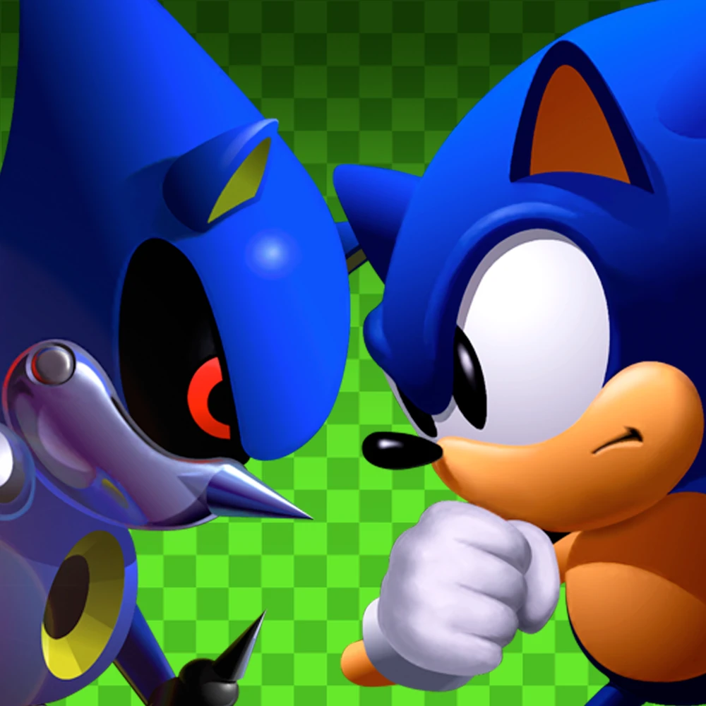
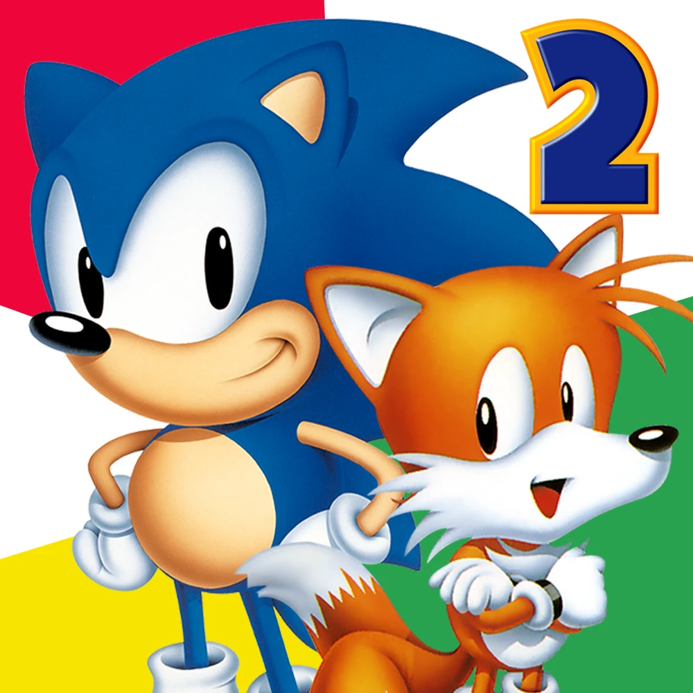
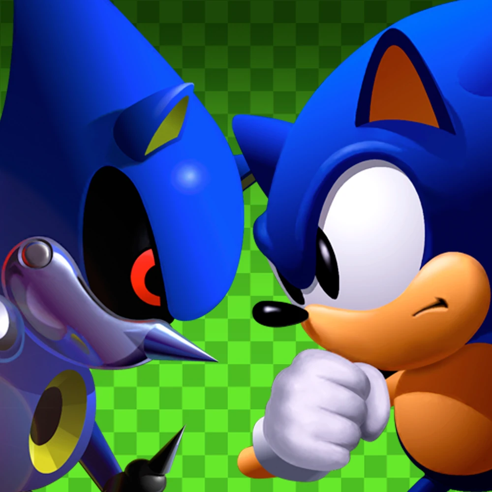

About the Projects
In 2011 and 2013, SEGA published mobile versions of Sonic the Hedgehog, Sonic the Hedgehog 2, and Sonic The Hedgehog CD. These were remakes from the ground up of the Mega Drive/Genesis titles by esteemed Sonic hacking community members Christian "Taxman" Whitehead and Simon "Stealth" Thomley, using the Taxman's custom 'Retro Engine'. They could play in a wider screen resolution, 60 frames per second, and even extras like new characters, abilities, and in some cases new levels. These was ported to devices like the Amazon Fire Stick, but by 2021 there was no hope for an official PC or console rerelease.
 



However, in January 2021, RubberDuckyCooly and stxticOVFL, a pair of talented programmers interested in the Retro Engine's inner workings, released a full decompilation of the engine versions these releases were built on. This allowed people to play the games natively on PC, provided you had a copy of the relevant game's data file. RubberDuckyCooly then decompiled the bytecode of the games, allowing modders to change the script to add their own custom features. These were then further updated and polished by members of the Retro Engine modding community to be updated to the versions seen in SEGA’s long-awaited rerelease through Sonic Origins.
Sonic the Hedgehog Forever, Sonic the Hedgehog 2 Absolute and 'UNANNOUNCED TEAM FOREVER CD PROJECT' are built on this foundation. We've sought to make the classic Sonic the Hedgehog games easier to access on PC, including bug fixes, extra options and abilities that are new to even the mobile ports, but now have expanded to be love-letters to these games with a variety of new and updated content. The downloads come with setup scripts and a relevant tool to unpack the apps automatically, allowing a new player to play the games on PC with very little work.

We hope that the work we're doing*, on top of the work others have done to make it possible, lets you experience these unforgettable games in the best way possible.
*Because we're not finished just yet!
All Team Forever projects* use RSDKv4+: a modified version of the Retro Engine v4 decompilation created by ProdNW. Team Forever has contributed to this engine fork with the changes found in our original engine fork.
This modified engine allows content and features not possible with the base decomplication. This includes:
- SteamAPI
- Discord Rich Pressence
- Multi-syntax support (Pre-Origins and Current)
- Increased memory for graphics and sound
- More freedom with sprite effects, graphic effects
- And many more!
For those interested, the code is open-source, and available here.
This is just the engine that runs the decompiled games, so it won't run without the game assets. It's forked from the original decompilation by RubberDuckyCooly and RMGRich, which you can find here.
You do not need this to install and play our projects. All you need for that is the downloads from the relevant page.